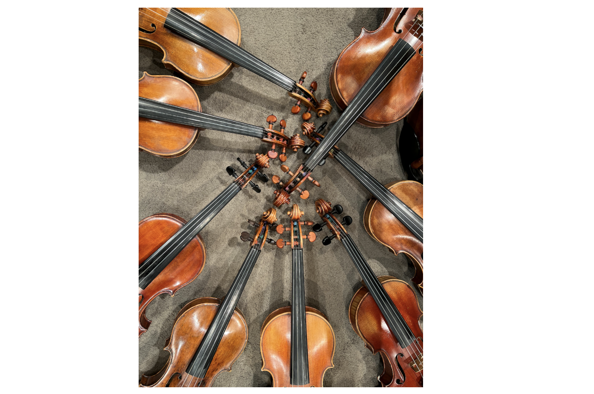
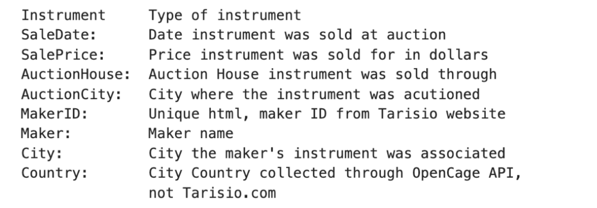
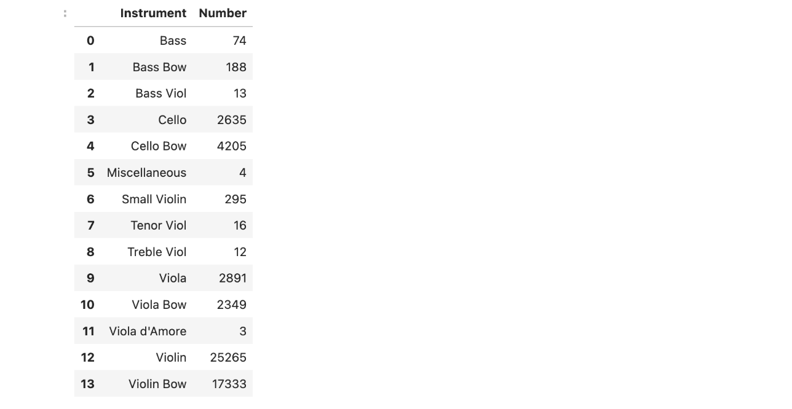
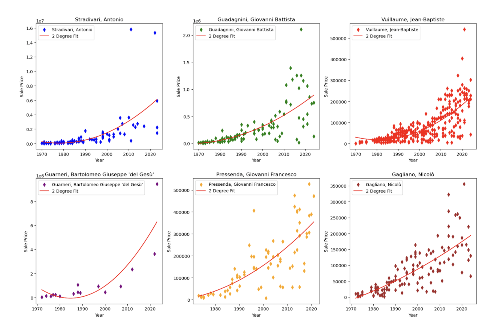
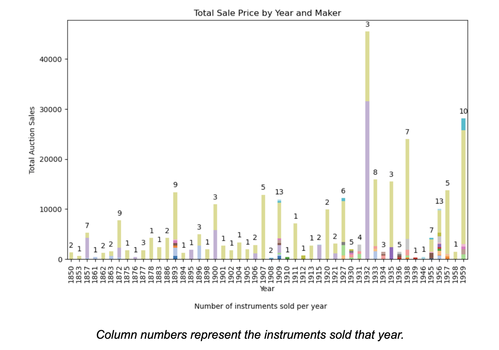
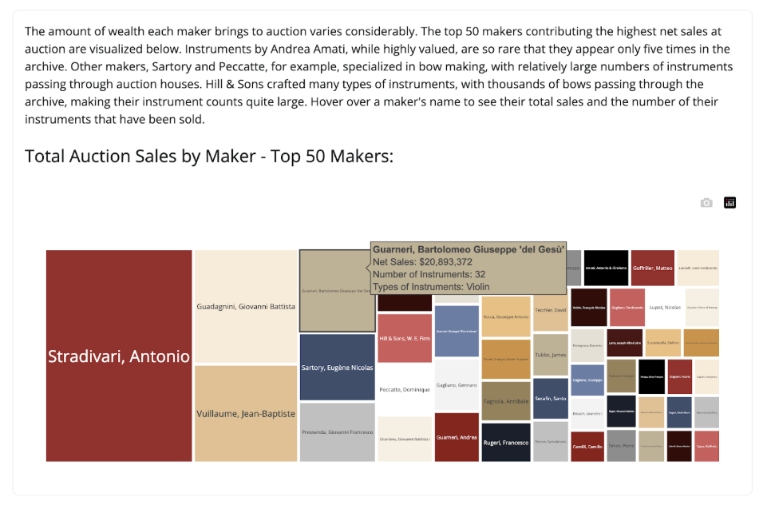
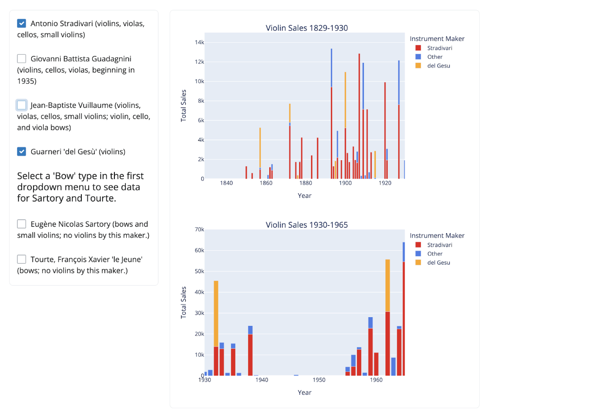
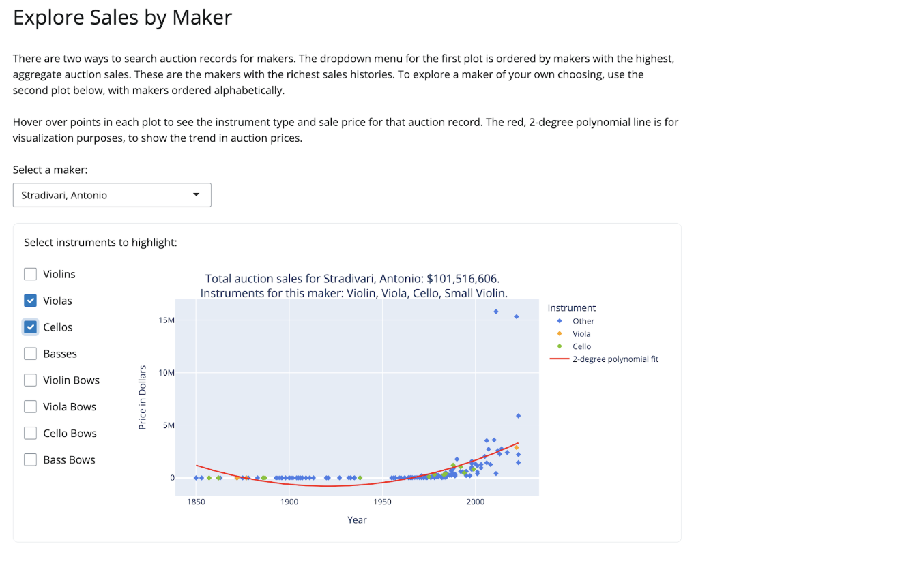
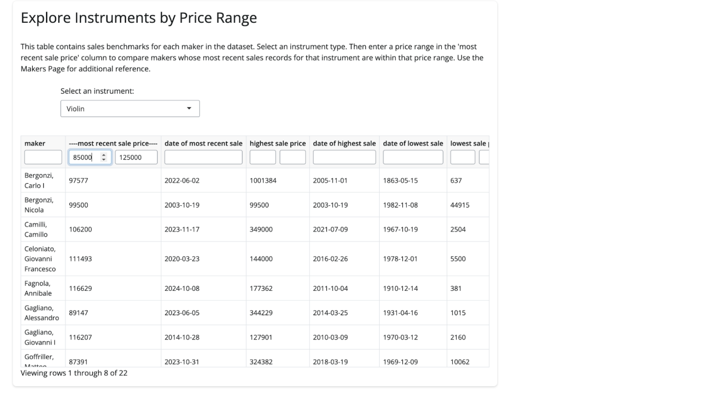

Exploring Tarisio Stringed Instrument and Bow Auction Data
by Margaret Bowers
Instruments of the Spokane Symphony Orchestra, photo by author
Introduction
The goal of this project was to design a Shiny dashboard that analyzes a real-world dataset using Python. As a professional violinist, I wanted to leverage my domain knowledge and interests and chose to use stringed instrument and bow auction data from Tarisio.com for my project.
Tarisio is an auction house with the largest repository of fine stringed instrument and bow auction data in the world. The foundation of their data is the Cozio Archive, named for Count Ignazio Alessandro Cozio di Salabue, an Italian nobleman who lived from 1755 to 1840. He is considered to be the first great collector of fine stringed instruments.
The Cozio Archive, containing provenance and pricing data for historical stringed instruments, was formally created in 2003. The more than 55,000 auction entries include data from 40 auction houses and records for instruments and bows by more than 3500 makers. The data covers almost 200 years of auction sales records.
While intrigued by the most famous makers and the most expensive instruments, and I look at them in detail, I am more interested in the ‘lesser’ (and more affordable) makers represented in the dataset. I wanted a dashboard that would both satisfy my curiosity as a performer and potential investor and that could serve as a resource to other professional musicians.
Obtaining and Selecting the Data
I scraped the data in late October 2024 from the Makers and Cities pages of Tarisio.com. This posed a visualization challenge, as the sales prices range from less than $100 to almost $16 million. I considered this when designing my app, and chose to utilize multiple plots in order to interact with the earliest data, which disappears in the barcharts when visualizing the dataset in its entirety.
In the course of my research, I pulled data from both Makers and Cities pages. However, ultimately, I opted to only use data from the Makers pages in my dashboard app. The dataset is comprised of the following features:

Because my entry into this project was based on curiosity and exploration, I imported a ‘Country’ field, as well, in order to examine instrument provenance (‘City’) data, though I ended up scaling back my app to focus on my key investment interests.
There are 14 types of instruments represented. The chart below lists each kind of instrument and the number of those instruments that appear in the dataset.

It is important to understand that 75% of the data is for violins and violin bows. Cellos, cello bows, violas, and viola bows make up 21% of the data, with basses, bass bows, viols, small violins, viola d’amores, and miscellaneous items making up the remainder. The 4 miscellaneous items are bow frogs, the mechanical portions of a bow, without the stick and hair.
The dataset contains 55,283 auction records. Every entry includes what type of instrument was sold, its maker, sale date, and sale price. All in all 3,573 unique makers are represented, many of which have only appeared on a few auction records. Because of this sparsity, I organized my Makers page to load plots for top makers first. That order gives the user a nice entry into rich data. As this is not an optimal way to search the makers’ data, I also include a section that allows for alphabetical searches on maker names.
Visualizing the Data

It was interesting to see how the price ranges varied over time. The first 100 years of the dataset have individual sales prices ranging from $20 to $7619. Prices increased in 1930-1965 hitting a high of $52,800. But the real jump came in 1988 when the first of 36 $1 million dollar violins appeared. After that, auction prices soared to over $15.8 million. I noticed quickly that there were a few makers who were dominant early in the data; their names were invariably associated with some of the highest auction prices.

We can see this early in the dataset. The columns are color coded, with each color representing a different maker. The column numbers are the number of instruments sold each year. The pale green represents annual total sales for Antonio Stradivari. The lavender represents total annual sales for Bartolomeo Giuseppe ‘del Gesu’ Guarneri. Sales contributions from other makers are quite low by comparison. This trend continues throughout the dataset, with a few makers dominating annual sales. Giovanni Battista Guadagnini exerts a heavy influence on sales as well, but his instruments do not show up until 1935.
The total wealth reflected in the dataset is over $822 million. Out of over 55,000 sales records, there are only 166 Antonio Stradivari instruments, 116 Guadagninis, and 32 ‘del Gesus’. Though that adds up to just 314 instruments, they are so highly prized that they make up 20% of the wealth in sales.
Bows first appear in the data in 1969 and generate over $132 million in sales. Eugene Sartory’s bows make up 12.8% of bow sales, with bows by Dominique Pecatte and Hill & Sons coming in at 7.0% and 6.0% respectively. I was surprised that ‘Le Jeune’ Tourtes came in at 5.2% but noticed that they account for the most valuable individual bow sales. ‘Le Jeune’ Tourtes make up 13 of the top 20 most valuable bows in the dataset. Tourtes are comparatively rare. Only 119 of them move through the data in contrast to 1274 Sartorys, 224 Pecattes, and 3075 Hills.
The app
I designed my app to give users the ability to do this kind of exploration on their own. I wanted users to be able to look at how instruments are represented in the data and how some of the greatest makers dominate that data. I wanted users to be able to look closely at each maker’s records to see how their sales trend over time. I also wanted to show how current auction prices compare across makers.
The ‘About’ page orients the user into the data they will be exploring, showing how instruments are represented (violins and violin bows, most heavily) and how top makers influence the records (with maker statistics for total auction sales, instrument counts, and types of instruments sold).

The ‘Instruments’ page allows users to choose an instrument type and see yearly price data and instrument sale counts over the time frame of the dataset. Three plots allow the user to interact with the early years and middle range of the dataset when prices were very low compared to the last 60 years. There is also an option to choose some of the most financially dominant makers to see how their sales move through the data.

The ‘Makers’ page allows a user to look at all of the auction records for a given maker and to see how their sales have trended over time. I chose to fit the data with a 2-degree polynomial to visualize sales trends.
Because of data sparsity for some makers, I loaded the page with makers ordered by highest total auction sales (the richest data) first. With over 3500 makers, sorting through it all is overwhelming, so I included a second plot with makers sorted alphabetically.

The title of each maker plot includes the total auction sales for that maker, as well as the types of instruments they made, to inform checkbox selection. I did not include Small Violin, Miscellaneous, Viola d’Amore, or Viols in the checkboxes since there are so few of them and they would only be applied to a few makers. In order to see this data, a user can select one of those instrument types on the Price Range page to return a list of relevant makers to explore.
The ‘Price Range’ page is the least visually interesting page of the app, but it is the most interesting to me. As a professional, I have considered upgrading instruments and want a better understanding of which makers are comparable within my price range.

After the user selects an instrument, the table sorts on maker data for its most recent sale prices. A user can choose a price range of interest and then see the makers whose most recent sales are within that range, as well as the dates for those sales. There is also data for highest and lowest sales prices and dates for those sales as a point of reference. The user can then toggle back to the Makers page and explore trends for these makers to get a sense of how their sales have evolved over time.
Future Work and Conclusions
Because this data was scraped in October 2024, it does not include recent modifications and auction data. It would be an interesting project to implement real-time features, so that the data reflects the current state of the archive.
As a professional violinist, I found this data fascinating. Buying a professional grade instrument is a huge and necessary investment for a professional musician. It is always our hope, as investors, that we will buy something that appreciates over time. The top makers are, so far, good investments, but they are out of reach for musicians like me. There are many other financially accessible makers whose sales prices have been increasing, plateauing, or trending downward. While this is not a sure indication of how instruments will be valued in the future, it is interesting to consider and to compare with makers across similar price tiers.
Please note that this app is not designed for small devices like cell phones and is best viewed on a laptop or other full-sized screen.